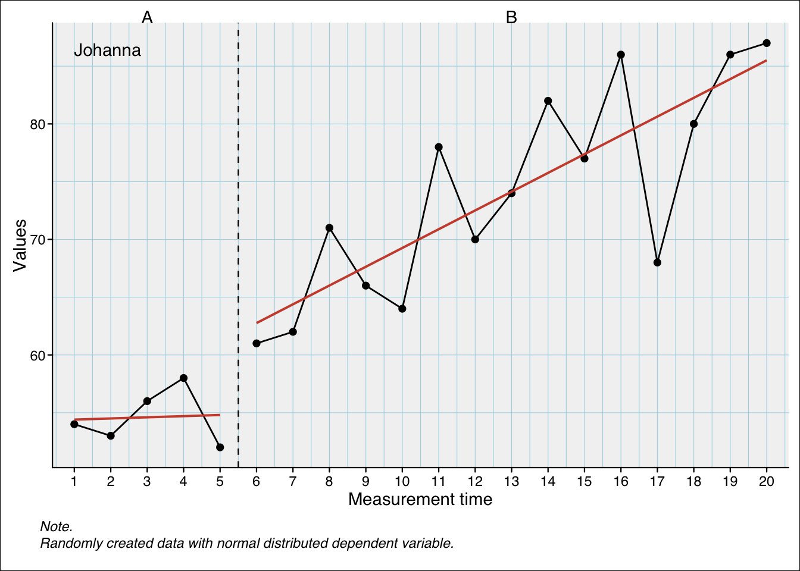

9 Piecewise linear regressions
In a piecewise-regression analysis (sometimes called segmented regression) a dataset is split at a particular break point and the regression parameters (intercept and slopes) are calculated separately for the data before and after the break point. This is done because we assume that there is a qualitative change at the break point that affects the intercept and slope. This approach is well suited to the analysis of single-case data which are from a statistical point of view time-series data segmented into phases. A general model for single-case data based on the piecewise regression approach has been proposed by Huitema and McKean Huitema & Mckean (2000). They refer to two-phase single-case designs with a pre-intervention phase containing some measurements before the start of the intervention (A-phase) and an intervention phase containing measurements starting at the beginning of the intervention and continuing throughout intervention (B-phase).
In this model, four parameters predict the outcome at a specific measurement point see 9.1
The performance at the beginning of the study (intercept),
a developmental effect leading to a continuous increase throughout all measurements (trend effect),
an intervention effect leading to an immediate and constant increase in performance (level effect), and
a second intervention effect that evolves continuously with the beginning of the intervention (slope effect).
The regression model
The default model applied in the plm function has the formula
\[ y_i = \beta_0 + \beta_1 (time_i-time_1) + \beta_2 phase_i + \beta_3 (time_i-time_{n_A+1})*phase_i \]
Where:
\(i\) := the session1 number.
\(\beta_0\) := the intercept.
\(\beta_1 time\) := the continuous effect of the measurement time (the trend effect).
\(\beta_2 phase\) := the discrete effect of the phase switch (the level effect).
\(\beta_3 (time-n_{A+1})*phase\) := the continuous effect of the phase switch (the slope effect).
\(n_{A+1}\) := the first session of phase B.
For \(\beta_1\) and \(\beta_3\), the time variables are shifted to start with a 0 at the first session of the respective phase.
scan provides an implementation based on this piecewise-regression approach. Though the original model is extended by several factors:
- multiple phase designs
- additional (control) variables
- autoregression modelling
- logistic, binomial, and poisson distributed dependent variables and error terms
- multivariate analyses for analysing the effect of an intervention on more than one outcome variable (see Chapter 11).
- multilevel analyses for multiple cases (see Chapter 10).
9.1 The basic plm function
The plm function call
plm(data, dvar, pvar, mvar, AR = 0, model = c(“W”, “H-M”, “B&L-B”, “JW”), family = “gaussian”, trend = TRUE, level = TRUE, slope = TRUE, contrast = c(“first”, “preceding”), contrast_level = c(NA, “first”, “preceding”), contrast_slope = c(NA, “first”, “preceding”), formula = NULL, update = NULL, na.action = na.omit, r_squared = TRUE, var_trials = NULL, dvar_percentage = FALSE, …)
The basic function for applying a regression analyses to a single-case dataset is plm. This function analyses one single-case. In its simplest way, plm takes one argument with an scdf object and it returns a full piecewise-regression analyses.
plm(exampleAB$Johanna)Piecewise Regression Analysis
Contrast model: W / level = first, slope = first
Fitted a gaussian distribution.
F(3, 16) = 28.69; p = 0.000; R² = 0.843; Adjusted R² = 0.814
B 2.5% 97.5% SE t p delta R²
Intercept 54.400 46.776 62.024 3.890 13.986 0.000
Trend (mt) 0.100 -3.012 3.212 1.588 0.063 0.951 0.000
Level phase B (phaseB) 7.858 -3.542 19.258 5.816 1.351 0.195 0.018
Slope phase B (interB) 1.525 -1.642 4.692 1.616 0.944 0.359 0.009
Autocorrelations of the residuals
lag cr
1 -0.32
2 -0.13
3 -0.01
Ljung-Box test: X²(3) = 2.84; p = 0.417
Formula: values ~ 1 + mt + phaseB + interBThe output shows the specific contrast settings for the phase and slope calculation (see below for a detailed explanation). Next, the overall model fit is provided. In this specific example the model fit is quite high explaining more than 80% of the variance of the dependent variable. The following regression table shows the unstandardised estimates (B), the lower and upper boundaries of a 95% confidence interval, the standard-error, the t-test statistic, the p-value, and the delta R squared for each predictor.
In this example, the intercept is the score estimation at the beginning of the study (here: at the first session, see Figure 9.2). The trend effect (variable mt) is 0.100. This means that for every one point increase in measurement-time, the score increased by 0.100. As this example has a total of 20 sessions, the overall increase due to the trend is \(19 * 0.100 = 1.9\) points. The level effect (variable phase with level B) is 7.858. This means that all scores of phase B are increased by 7.858 points. The slope effect (for phase B) is 1.525. This means that for every one point increase in measurement time after the first phase B session, the score increases by 1.525. As there are 15 Phase B sessions in this example, the total increase due to the slope effect is \(14 * 1.525 = 21.35\) points.
From these values each data point can be estimated. For example, the last session (\(i=20\)) is estimated to be \(54.400 + 19 * 0.100 + 7.858 + 14 * 1.525 = 85.508\).
scplot(exampleAB$Johanna) |> add_statline("trend")

Note
As a convenience, the predictors are renamed according to the respective effect within the single-case terminology that they represent.
If you prefer to use the original variable names, set the following option: options(scan.rename.predictors = "no").
If you want more concise renamed predictors, set: options(scan.rename.predictors = "concise").
You can restore the default renaming by setting: options(scan.rename.predictors = "full").
9.2 Autocorrelation of the residuals
The output also reports the autocorrelations of the residuals, which indicate whether the measurements are serially independent.
There are many reasons why your data might exhibit serial dependence. For example, in a learning study, performance may temporarily decline after a learning session (performance dip). Similarly, in a medication study, a drug might initially cause a brief worsening of symptoms before exerting its intended therapeutic effect (early symptom exacerbation effect).
The lag refers to the number of measurement points between observations that show autocorrelation.
The Ljung-Box test is an omnibus test that evaluates whether the residuals exhibit significant autocorrelation at multiple lags. It assesses whether the joint distribution of autocorrelations differs significantly from what would be expected under the assumption of independence.
High and significant autocorrelations pose a threat to the validity of standard regression model assumptions, as they violate the assumption of independent residuals. To account for this, you can set the AR argument with the appropriate maximum lag (e.g., AR = 3). This implements an ARMA (autoregressive moving average) model, which adjusts for the serial correlation in the residuals.
9.3 Standardizing predictors
If you want standardized predictors, meaning that predictors are scaled to standard deviations, the best approach is to standardize all variables before computing the regression model. Use the rescale() function to do this.
exampleAB$Johanna |>
rescale() |>
plm()Rescaled values, mtPiecewise Regression Analysis
Contrast model: W / level = first, slope = first
Fitted a gaussian distribution.
F(3, 16) = 28.69; p = 0.000; R² = 0.843; Adjusted R² = 0.814
B 2.5% 97.5% SE t p delta R²
Intercept -1.276 -1.931 -0.621 0.334 -3.818 0.002
Trend (mt) 0.051 -1.531 1.633 0.807 0.063 0.951 0.000
Level phase B (phaseB) 0.675 -0.304 1.655 0.500 1.351 0.195 0.018
Slope phase B (interB) 0.775 -0.835 2.385 0.821 0.944 0.359 0.009
Autocorrelations of the residuals
lag cr
1 -0.32
2 -0.13
3 -0.01
Ljung-Box test: X²(3) = 2.84; p = 0.417
Formula: values ~ 1 + mt + phaseB + interBThe regression coefficients B are now standardized Beta (ß) coefficients, indicating the expected change (in standard deviations) of the dependent variable for a one-standard-deviation increase in the predictor.
9.4 Adjusting the model
The plm model is a complex model specifically suited for single-case studies. It entails a series of important parameters. Nevertheless, often we have specific theoretical assumption that do no include some of these parameters. We might, for example, only expect an immediate but not a continuous change from a medical intervention. Therefore, it would not be useful to include the slope-effect into our modelling. Vice versa, we could investigate an intervention that will just develop across time without an immediate change with the intervention start. Here we should drop the level-effect from out model. Even the assumption of a trend-effect can be dropped in cases where we do not expect a serial dependency of the data and we do not assume intervention independent changes within the time-frame of the study.
It is important to keep in mind, that an overly complex model might have negative effects on the test power of an analyses (that is, the probability of detecting an actually existing effect is diminished) (see Wilbert, Lüke, & Börnert-Ringleb, 2022)
9.4.1 The slope, level, and trend arguments
The plm function comes with three arguments (slope, level, and trend) to include or drop the respective predictors from the plm model. Buy default, all arguments are set TRUE and a full plm model is applied to the data.
Consider the following data example:
example <- scdf(
values = c(A = 55, 58, 53, 50, 52,
B = 55, 68, 68, 81, 67, 78, 73, 72, 78, 81, 78, 71, 85, 80, 76)
)
plm(example)Piecewise Regression Analysis
Contrast model: W / level = first, slope = first
Fitted a gaussian distribution.
F(3, 16) = 21.36; p = 0.000; R² = 0.800; Adjusted R² = 0.763
B 2.5% 97.5% SE t p delta R²
Intercept 56.400 48.070 64.730 4.250 13.270 0.000
Trend (mt) -1.400 -4.801 2.001 1.735 -0.807 0.432 0.008
Level phase B (phaseB) 16.967 4.510 29.424 6.356 2.670 0.017 0.089
Slope phase B (interB) 2.500 -0.961 5.961 1.766 1.416 0.176 0.025
Autocorrelations of the residuals
lag cr
1 -0.28
2 0.05
3 -0.11
Ljung-Box test: X²(3) = 2.14; p = 0.543
Formula: values ~ 1 + mt + phaseB + interBThe piecewise regression reveals a significant level effect and two non significant effects for trend and slope. In a further analyses we would like to put the slope effect out of the equation. The easiest way to do this is to set the slope argument to FALSE.
plm(example, slope = FALSE)Piecewise Regression Analysis
Contrast model: W / level = first, slope = first
Fitted a gaussian distribution.
F(2, 17) = 29.30; p = 0.000; R² = 0.775; Adjusted R² = 0.749
B 2.5% 97.5% SE t p delta R²
Intercept 51.572 46.455 56.690 2.611 19.752 0.000
Trend (mt) 1.014 0.364 1.664 0.332 3.057 0.007 0.124
Level phase B (phaseB) 10.329 1.674 18.983 4.416 2.339 0.032 0.072
Autocorrelations of the residuals
lag cr
1 -0.07
2 0.06
3 -0.17
Ljung-Box test: X²(3) = 0.99; p = 0.804
Formula: values ~ 1 + mt + phaseBIn the resulting estimations the trend and level effects are now significant. The model estimated a trend effect of 1.01 points for every one point increase in measurement-time and a level effect of 10.33 points. That is, with the beginning of the intervention (the B-phase) the score increases by \(5 x 1.01 + 10.33 = 15.38\) points (the measurement-time is increases by five, from one to six, at the first session of phase B).
9.5 Adding additional predictors
In more complex analyses, additional predictors can be included in the piecewise regression model.
To do this, we have to change the regression formula ‘manually’ by applying the update argument. The update argument allows to change the underlying regression formula. To add a new variable named for example newVar, set update = .~. + newVar. The .~. part takes the internally build model formula (based on the number of phases in your model and the setting of the slope, level, and trend arguments) and + newVar adds a variable called newVar to the equation.
Here is an example adding the control variable cigarrets to the model:
plm(exampleAB_add, update = .~. + cigarrets)Piecewise Regression Analysis
Contrast model: W / level = first, slope = first
Fitted a gaussian distribution.
F(4, 35) = 5.87; p = 0.001; R² = 0.402; Adjusted R² = 0.333
B 2.5% 97.5% SE t p delta R²
Intercept 48.971 43.387 54.555 2.849 17.189 0.000
Trend 0.392 -0.221 1.005 0.313 1.253 0.218 0.027
Level Medication 3.459 -3.382 10.301 3.490 0.991 0.328 0.017
Slope Medication -0.294 -0.972 0.384 0.346 -0.850 0.401 0.012
cigarrets -0.221 -1.197 0.755 0.498 -0.443 0.660 0.003
Autocorrelations of the residuals
lag cr
1 0.20
2 -0.19
3 -0.16
Ljung-Box test: X²(3) = 4.33; p = 0.228
Formula: wellbeing ~ day + phaseMedication + interMedication + cigarretsThe output of the plm-function shows the resulting formula for the regression model that includes the cigarettes variable:
Formula: wellbeing ~ day + phaseMedication + interMedication + cigarrets
9.6 Dummy models
The model argument is used to code the dummy variables. These dummy variables are used to compute the slope and level effects of the phase variable.
The phase variable is categorical, identifying the phase of each measurement. Typically, categorical variables are implemented by means of dummy variables. In a piecewise regression model two phase effects have to be estimated: a level effect and a slope effect. The level effect is implemented quite straight forward: for each phase beginning with the second phase a new dummy variable is created with values of zero for all measurements except the measurements of the phase in focus where values of one are set.
| values | phase | mt | level B |
|---|---|---|---|
| 3 | A | 1 | 0 |
| 6 | A | 2 | 0 |
| 4 | A | 3 | 0 |
| 7 | A | 4 | 0 |
| 5 | B | 5 | 1 |
| 3 | B | 6 | 1 |
| 4 | B | 7 | 1 |
| 6 | B | 8 | 1 |
| 3 | B | 9 | 1 |
For estimating the slope effect of each phase, another kind of dummy variables have to be created. Like the dummy variables for level effects the values are set to zero for all measurements except the ones of the phase in focus. Here, values start to increase with every measurement until the end of the phase.
Various suggestions have been made regarding the way in which these values increase (see Huitema & Mckean, 2000). The B&L-B model starts with a one at the first session of the phase and increases with every session while the H-M model starts with a zero.
slope B
|
|||||
|---|---|---|---|---|---|
| values | phase | mt | level B | model B&L-M | model H-M |
| 3 | A | 1 | 0 | 0 | 0 |
| 6 | A | 2 | 0 | 0 | 0 |
| 4 | A | 3 | 0 | 0 | 0 |
| 7 | A | 4 | 0 | 0 | 0 |
| 5 | B | 5 | 1 | 1 | 0 |
| 3 | B | 6 | 1 | 2 | 1 |
| 4 | B | 7 | 1 | 3 | 2 |
| 6 | B | 8 | 1 | 4 | 3 |
| 3 | B | 9 | 1 | 5 | 4 |
Applying the H-M model will give you a “pure” level-effect while the B&L-B model will provide an estimation of the level-effect that is actually the level-effect plus on times the slope-effect (as the model assumes that the slope variable is 1 at the first measurement of the B-phase). For most studies, the H-M model is more appropriate.
However, there is another aspect to be aware of. Usually, in single case designs, the measurement times are coded as starting with 1 and increasing in integers (1, 2, 3, …). At the same time, the estimation of the trend effect is based on the measurement time variable. In this case, the estimate of the model intercept (usually interpreted as the value at the beginning of the study) actually represents the estimate of the starting value plus one times the trend effect. Therefore, I have implemented the W model (since scan version 0.54.4). Here the trend effect is estimated for a time variable shifted to start at 0. As a result, the intercept represents the estimated value at the first measurement of the study. The W model treats slope estimation in the same way as the H-M model. That is, the measurement-time for calculating the slope effect is set to 0 for the first session of each phase. Since scan version 0.54.4 the W model is the default.
mt
|
slope
|
|||||
|---|---|---|---|---|---|---|
| values | phase | level | B&L-M and H-M | W | B&L-M | H-M and W |
| 3 | A | 0 | 1 | 0 | 0 | 0 |
| 6 | A | 0 | 2 | 1 | 0 | 0 |
| 4 | A | 0 | 3 | 2 | 0 | 0 |
| 7 | A | 0 | 4 | 3 | 0 | 0 |
| 5 | B | 1 | 5 | 4 | 1 | 0 |
| 3 | B | 1 | 6 | 5 | 2 | 1 |
| 4 | B | 1 | 7 | 6 | 3 | 2 |
| 6 | B | 1 | 8 | 7 | 4 | 3 |
| 3 | B | 1 | 9 | 8 | 5 | 4 |
9.7 Designs with more than two phases: Setting the right contrasts
For single case studies with more than two phases, things get a bit more complicated. Applying the models described above to three phases would result in a comparison between each phase and the first phase (usually phase A). That is, the regression weights and significance tests indicate the differences between each phase and the values from phase A. Another common use is to compare the effects of a phase with the previous phase.
As of scan version 0.54.4, plm allows to set a contrast argument. contrast = "first" (the default) will compare all slope and level-effects to the values in the first phase. contrast = "preceding" will compare the slope and level-effects to the preceding phase.
For the preceding contrast, the dummy variable for the level-effect is set to zero for all phases preceding the phase in focus and set to one for all remaining measurements. Similarly, the dummy variable for the slope-effect is set to zero for all phases preceding the phase in focus and starts at zero (or one, depending on the model setting, see Section 9.6) for the first measurement of the target phase and increases until the last measurement of the case.
You can set the contrast differently for the level and slope effects with the arguments constrast_level and contrast_slope. Both can be either "first" or "preceding".
(Note: Prior to scan version 0.54.4, the option model = "JW" was identical to model = "B&L-B", contrast = "preceding").
contrast first |
contrast preceeding |
|||||||||
|---|---|---|---|---|---|---|---|---|---|---|
level
|
slope
|
level
|
slope
|
|||||||
| values | phase | mt | B | C | B | C | B | C | B | C |
| 3 | A | 1 | 0 | 0 | 0 | 0 | 0 | 0 | 0 | 0 |
| 6 | A | 2 | 0 | 0 | 0 | 0 | 0 | 0 | 0 | 0 |
| 4 | A | 3 | 0 | 0 | 0 | 0 | 0 | 0 | 0 | 0 |
| 7 | A | 4 | 0 | 0 | 0 | 0 | 0 | 0 | 0 | 0 |
| 5 | B | 5 | 1 | 0 | 1 | 0 | 1 | 0 | 1 | 0 |
| 3 | B | 6 | 1 | 0 | 2 | 0 | 1 | 0 | 2 | 0 |
| 4 | B | 7 | 1 | 0 | 3 | 0 | 1 | 0 | 3 | 0 |
| 6 | B | 8 | 1 | 0 | 4 | 0 | 1 | 0 | 4 | 0 |
| 3 | B | 9 | 1 | 0 | 5 | 0 | 1 | 0 | 5 | 0 |
| 7 | C | 10 | 0 | 1 | 0 | 1 | 1 | 1 | 6 | 1 |
| 5 | C | 11 | 0 | 1 | 0 | 2 | 1 | 1 | 7 | 2 |
| 6 | C | 12 | 0 | 1 | 0 | 3 | 1 | 1 | 8 | 3 |
| 4 | C | 13 | 0 | 1 | 0 | 4 | 1 | 1 | 9 | 4 |
| 8 | C | 14 | 0 | 1 | 0 | 5 | 1 | 1 | 10 | 5 |
9.8 Understanding and interpreting contrasts
In this section, we will calculate four plm models with different contrast settings for the same single-case data.
The example scdf is the case ‘Marie’ from the exampleABC scdf (exampleABC$Marie)

The dark-red lines indicate the intercept and slopes when calculated separately for each phase. They are:
| intercept | slope | n | |
|---|---|---|---|
| phase A | 60.618 | -1.915 | 10 |
| phase B | 74.855 | -0.612 | 10 |
| phase C | 68.873 | -0.194 | 10 |
Now we estimate a plm model with four contrast settings (see Table 9.2):
| Contrast level | Contrast slope | intercept | trend | level B | level C | slope B | slope C |
|---|---|---|---|---|---|---|---|
| first | first | 60.618 | -1.915 | 33.388 | 46.558 | 1.303 | 1.721 |
| preceding | preceding | 60.618 | -1.915 | 33.388 | 0.139 | 1.303 | 0.418 |
| first | preceding | 60.618 | -1.915 | 33.388 | 33.527 | 1.303 | 0.418 |
| preceding | first | 60.618 | -1.915 | 33.388 | 13.170 | 1.303 | 1.721 |
9.8.1 Phase B estimates
All regression models in Table 9.2 have the same estimates for intercept and trend. These are not affected by the contrasts and are identical to those for phase A in Table 9.1. In addition, in Table 9.2, the estimates for levelB and slopeC are identical since all models contrast the same phase (the first and the preceding phase are both phase A). The values here can be calculated from Table 9.12:
\[ levelB = intercept_{phaseB} - (intercept_{phaseA} + n_{PhaseA} * slope_{phaseA}) \tag{9.1}\]
\[ 33.388 \approx 74.855 - (60.618 + 10*-1.915) \]
\[ slopeB = slope_{phaseB} - slope_{phaseA} \tag{9.2}\]
\[ 1.303 \approx -1.915 - (-0.612) \]
9.8.2 Phase C estimates
The levelC and slopeC estimates of the regression models in Table 9.2 are different for the various contrast models. Depending on the contrast setting, the estimates “answer” a different question. Table 9.3 provides interpretation help.
| Contrast level | Contrast slope | Interpretation of level C effect | Interpretation slope C effect |
|---|---|---|---|
| first | first | What would be the value if phase A had continued until to the start of phase C and what is the difference to the actual value at the first measurement of phase C? | What is the difference between the slopes of phase C and A3? |
| preceding | preceding | What would be the value if phase B had continued to the start of phase C and what is the difference to the actual value at the first measurement of phase C? | What is the difference between the slopes of phase C and B? |
| first | preceding | What would be the value if phase A had continued until the start of phase C (assuming a slope effect but no level effect in phase B)? And what is the difference to the actual value at the first measurement of phase C? | What is the difference between the slopes of phase C and B? |
| preceding | first | What would be the value if phase B had continued until the start of phase C (assuming a level but no slope effect in phase B)? And what is the difference to the actual value at the first measurement of phase C? | What is the difference between the slopes of phase C and A? |
All four models are mathematically equivalent, i.e. they produce the same estimates of the dependent variable. Bellow I will show how the estimates from the piecewise regression models relate to the simple regression estimates from Table 9.1. These are \(intercept_{phaseC} = 68.873\) and \(slope_{phaseC} = -0.194\).
Level first and slope first contrasts
Table 9.2 estimates a levelC increase of 46.558 compared to phase A (the intercept) and a slopeC increase of 1.721.
\[ levelC = intercept_{phaseC} - (Intercept_{phaseA} + n_{phaseA+B} * slope_{phaseA}) \tag{9.3}\]
\[46.558 \approx 68.873 - (60.618 + 20*-1.915) \]
\[ slopeC = slope_{phaseC} - slope_{phaseA} \tag{9.4}\]
\[1.721 \approx -0.194 - (-1.915)\]
Level preceding and slope preceding contrasts
Table 9.2 estimates a levelC increase of 0.139 compared to phase B and a slopeC increase of 0.418.
\[ levelC = intercept_{phaseC} - (intercept_{phaseB} + n_{phaseB} * slope_{phaseB}) \tag{9.5}\]
\[0.139 \approx 68.873 - (74.855 + 10*-0.612)\]
\[ slopeC = slope_{phaseC} - slope_{phaseB} \tag{9.6}\]
\[0.418 \approx -0.194 - (-0.612)\]
Level first and slope preceding contrasts
Table 9.2 estimates a levelC increase of 33.388 compared to phase A and a slopeC increase of 0.418.
\[ levelC = intercept_{phaseC} - (intercept_{phaseA} + n_{phaseA} * slope_{phaseA} + n_{phaseB} * slope_{phaseB}) \tag{9.7}\]
\[ 33.527 \approx 68.873 - (60.618 + 10 * -1.915 + 10 * -0.612) \]
\[ slopeC = slope_{phaseC} - slope_{phaseB} \tag{9.8}\]
\[0.418 \approx -0.194 - (-0.612)\]
Level preceding and slope first contrasts
Table 9.2 estimates a levelC increase of 13.170 compared to phase B and a slopeC increase of 1.721.
\[ levelC = intercept_{phaseC} - (intercept_{phaseB} + n_{phaseB} * slope_{phaseA}) \tag{9.9}\]
\[ 13.170\approx 68.873 - (74.855 + 10*-1.915) \]
\[ slopeC = slope_{phaseC} - slope_{phaseA} \tag{9.10}\]
\[ 1.721 \approx -0.194 - (-1.915) \]
The session is the ordinal number (1st, 2nd, 3rd, …) of the measurements. While the measurement-time (the value of the measurement-time variable at a specific session/ measurement) is often identical to the session number, this is not necessarily the case. The measurement-time sometimes represents days since the start of the study or other intervals. Therefore, I refer to session or measurement for the ordinal position of the measurement and measurement-time for the value of the time variable at that session number.↩︎
Differences here and in the following calculations are due to rounding errors.↩︎
The slope of phase A is the trend effect.↩︎